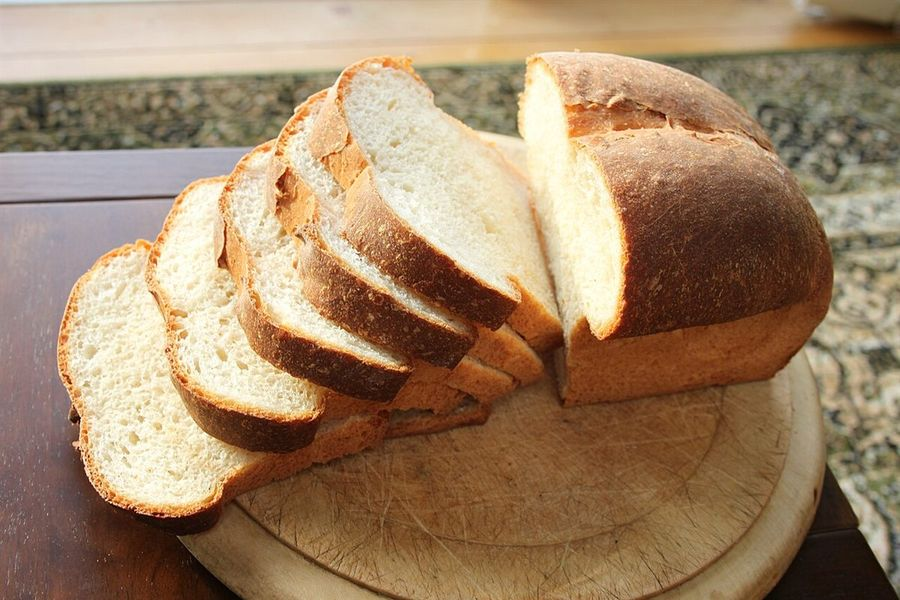
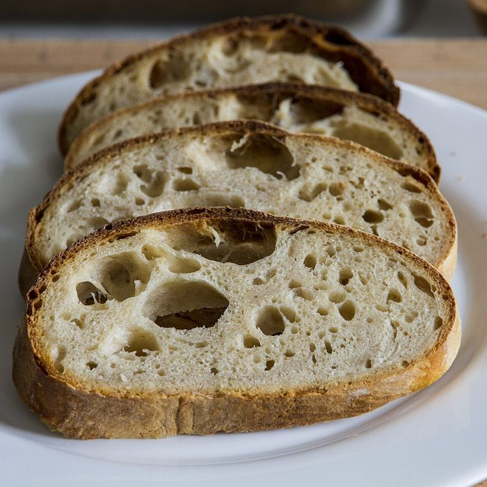
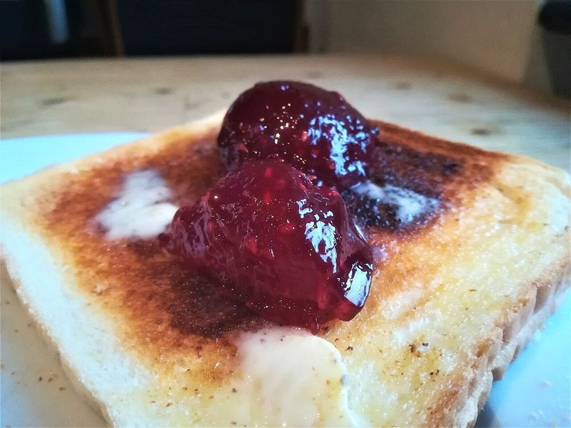
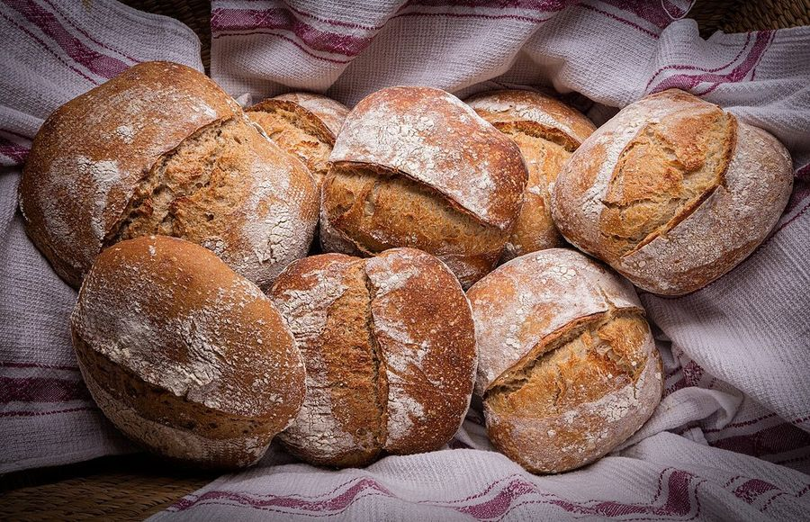
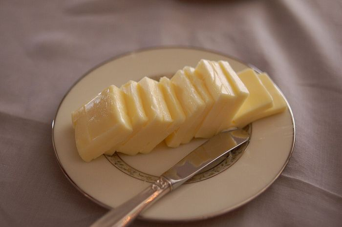
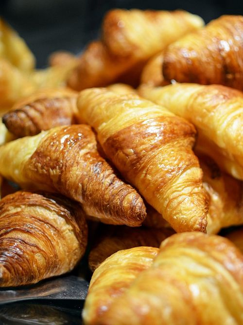

02
メニュー
ご案内
メニューと価格は準備中です。
詳しくはお電話またはInstagramでお問い合わせください。
イメージ写真
以下はイメージ写真で、tsuzukiの商品の紹介ではありません。






商品情報
準備中のため、掲載できる情報が揃い次第ここに追加します。
SAMPLE 営業提案用の試作ページです
掲載の写真はフリー素材のイメージ写真で、店舗の実際の写真ではありません。他地域(海外含む)で撮影されたもの、撮影地が不明なものを含みます。
メニューと価格は準備中です。
詳しくはお電話またはInstagramでお問い合わせください。
以下はイメージ写真で、tsuzukiの商品の紹介ではありません。






準備中のため、掲載できる情報が揃い次第ここに追加します。